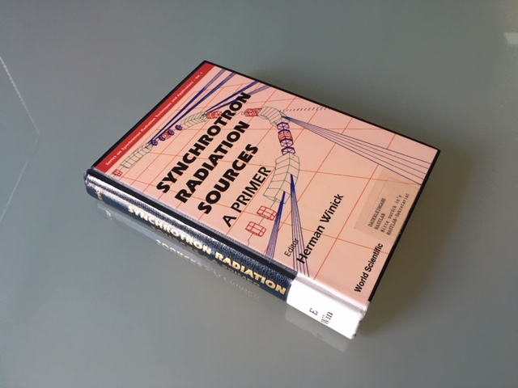

- on Sat 02 November 2019
Category: Books,
Here are my notes on the book "Synchrotron Radiation Sources: A Primer", edited by H. Winick. Although a little bit dated (the book is from 1995) it gives a nice overview of all components of a modern synchrotron and helps with better understanding of how all subsystem interconnect together. It also serves as a good introduction in the field of machine physics, which was for me (I have a diploma degree in electronics) quite effective to better understand the challenges faced in synchrotrons of the 4th generation (diffraction-limited storage rings).

Chapter 1
page 2: "electron (or positrons)" --> how would a a SLS with protons look like? larger insertions devices? different SR wavelengths?
page 4: betatron - early machines, vertical magnetic field (spatially const, time varying)
page 7: non top-up mode --> from what I heard it took several hours to start the machine
page 9: \(\gamma = \frac{mc^2}{E}\)
page 12: time structure - ESRF hybrid mode: "pulsed experiments in us, ns and ps time scale" (M. Wulff et al., Time-resolved structures of macromolecules at the ESRF)
page 13: are the main advantage of FELs short pulses or higher brightness?
page 15: TESLA CDR published in 1988, the book is from 1994.
Chapter 2
page 34: theory on strong focusing --> very interesting, study E. D. Curant et al., Theory of the alternating-gradient synchrotron.
page 35: are betatron oscillations period or is there a phase advance?
page 39: (slightly) rotated quadrupoles introduce x-y coupling
page 41: correctors at the beggining and at the end of the insertion device --> modern take presented in G. Rehm et al.: First projects at Diamond Light Source involving MTCA (https://indico.desy.de/indico/event/20703/session/0/contribution/77/material/slides/1.pdf, page 9)
page 41: what is a "tune shift"?
page 43: planar design --> prevents orbit "growth" in y (apart from coupling from quadrupoles)
page 44: dispersion-free region
page 46: dynamic aperture: max betatron osc that can be sustained
page 48: for how much do insertion devices reduce the energy? is this important for the orbit?
page 49: vertical/horizontal emittance ratio for most machines: 0.01 to 0.03
Chapter 3
page 60: septum magnets: what is the purpose, how do they work
page 62: off axis <-/-> on axis
page 68: max booster boost ratio of 50, in reality a little less. example 1: DESY II (injection at 450 MeV, ejection at 6 GeV - factor 13). example 2: SPS (max energy 450 GeV) to LHC (max energy 6500 GeV), factor 14
page 65: RF photo cathode gun now more popular
page 73: "brute force" used at MedAustron
page 75: 3 kA, 13 kV!!!
page 78: high-Z = high atomic number (e.g. W, Pb)
page 81: harmonic nr = number of buckets
Chapter 4
page 95: first mention of time-resolved measurement
page 91: synchrotron osc = longitudinal, betatron osc = transversal
page 96: cavity impedance scales lineraly with the number of cells
page 105: what about traveling-wave cavity? is this used in SLS?
page 111: How a Klystron amplifier works (https://www.youtube.com/watch?v=Fvud81pYGOg)
page 117: protection for kylstron: Klystron Lifetime Management (http://accelconf.web.cern.ch/AccelConf/ICALEPCS2013/talks/tucoca09_talk.pdf)
Chapter 5
page 122: photon BPMs to global orbit feedback also possible - Diamond, ELETTRA (here only local feedback is described)
page 132: "DIAMOND at Deresbury"
page 145: "the designer is relying very much on the good will of the stell company" --> the reality we work in
Chapter 6
page 159: digital feedback have taken over since the book was written
Chapter 7
page 163: book is from 1994, more modern methods could be used -> PXI or MTCA crate with motor controller and fast ADC
page 194: corrector magnets are not mentioned, but it would be convenient (and interesting) to measure the resp with high freq (e.g. at 1 kHz)
Chapter 8
page 197: "the beam would propagate only a few meters in atmosphere" --> more than I would expect
page 199: desorption <-/-> absorption (photon- and electron-stimulated desorbtion)
page 203: beam stop - photones after diploe --> more than 10 kW of power
page 211: 1e-11 Torr = still 1e11 molecules per L (= 2.5e22 molecules/L of air * 1e-11 Tor in atm)
Chapter 9
page 218: AI: last wave of AI, Lisp-based, very advanced but still very limited (=specific)
page 219: interesting from historical point of view - only EPICS is mentioned
page 220: communication protocols from the past Bitbus (http://accelconf.web.cern.ch/accelconf/p91/PDF/PAC1991_1496.PDF) and Multibus
page 220: reflective memory techniques (for FOFB)
page 225: drift and negative drift sounds very hackish; wouldn't it be easier to take the position and angle of the insertion device (2 step simulation)
page 226: check ref 27: "Computer Codes for Particle Accelerator Design and Analysis: A Compendium"
page 227: phase-space 6D - x, x', y, y' dp/p, ds - each coordinate relative to ideal orbit
page 228: R matrix sometimes 2x2, should is be 6x6 in "normal" case? find some examples for individual elements ...
page 228: beta-function is a solution for single particle motion
page 229: Twiss parameters <-> beta func and beta' (alfa, beta, gamma)
page 239: read again G. Strang: Linear Algebra and Its Applications
Chapter 10
page 245: time-resolved spectroscopy - learn more on this
page 251: "Signal Processing" chapter was written before DSP became mainstream
page 262: section on BPM is rather short --> study ref 61: K. Wittenburg "Beam Loss Detection"
page 271: wire scan is not mentioned?
Chapter 11
page 297: successive alignment steps: non-converging, circling around 0 in N-dim space
page 301: "Cultural noise at DESY" :D
Chapter 12
page 306: "resonate for a long time" - wake field decay --> check at FLASH
page 308: slightly of topic: we are dealing with 18 orders of magnitude
page 312: wake functions = causal functions; here i do not understand enough physics, isn't the field also present in front of the bunch? or is this valid only for ultra-relativistic bunches?
Chapter 13
page 346: three types of motion, three different time scales: longitudinal osc, transversal osc and closed orbit errors
page 349: Fig 13.2 (SSRL) --> feedback too slow to suppres 60 Hz and harmonics
page 351: phBPM: gap few times RMS of the beam
page 353: a mention of feedback simulation, no references given
page 358: Z transform: http://techteach.no/publications/discretetime_signals_systems/discrete.pdf
page 358: "beyond the Nyquist freq" --> not entirely true, undersampling is possible
page 362: MIMO, check:
- ref 19
- ref 20
- ref 21
- ref 22
Chapter 14 and 15
no relevant notes
Chapter 16
page 432: "safety is a part of doing things"
page 435: general observation: unreliable safety feature (i.e. interlock) will increase the danger
page 440: "The OPCOs have [...] the authority to stop any activity where safety [...] is in question" - everybody has (or should have) the Stop Work Authority
page 448: tungsten --> impossible to melt with beam
page 456: interlock testing: each input --> response
page 457: for PLCs the standard for functional safety (IEC 61508) should be mentioned. The standard was first published in 1998, while the book is from 1994.